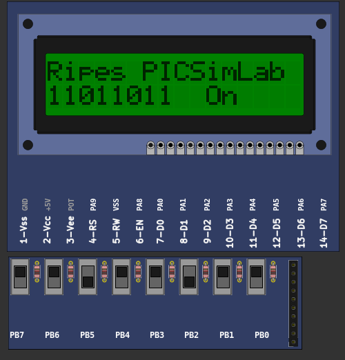
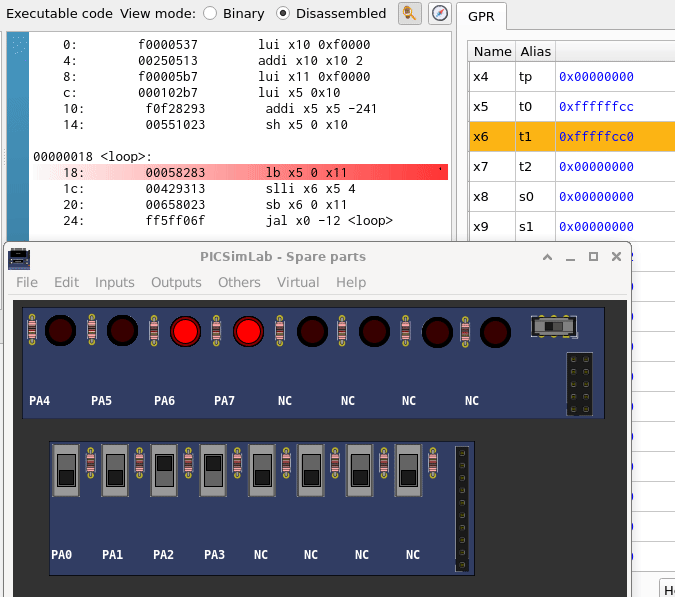

[Ripes/LCDSW]LCD switches Ripes PICSimLab exampleHow to use this example: - Load LCDSW.pzw on PICSimLab (experimental version) - Open Ripes (experimental version) and connect the external bus device. - Open the file lcdsw.c on Ripes, compile and run. lcdsw.c source code file | |
|  | Download (pzw) |
[Ripes/LED_SW]LED switches Ripes PICSimLab exampleHow to use this example: - Load LED_SW.pzw on PICSimLab (experimental version) - Open Ripes (experimental version) and connect the external bus device. - Open the file led_sw.s on Ripes and run. led_sw.s source code file | |
|  | Download (pzw) |